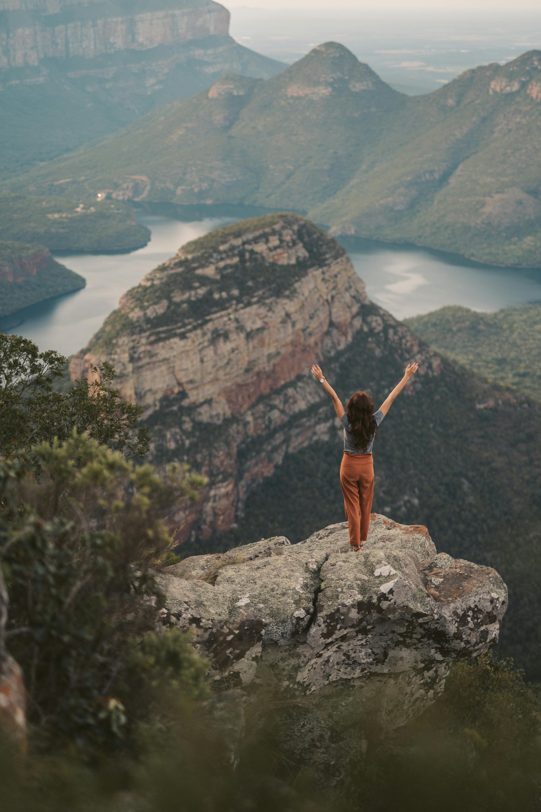
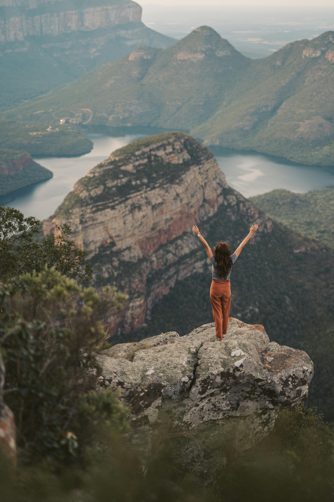

soy?
Hola! bienvenido a mi rincón del mundo. Soy Nina, una apasionada viajera y
fotógrafa que ama
explorar nuevos
destinos y capturar momentos mágicos.
Mi objetivo es inspirarte a salir de tu zona de confort y explorar el mundo con curiosidad y asombro.
Aquí
encontrarás historias de viajes, consejos prácticos, fotografías inspiradoras y mucho más. ¡Espero que
disfrutes el viaje!
compañero
Pluto es mi fiel compañero de aventuras y mi mejor amigo. Es un experto en explorar
nuevos sitios, hacer nuevas amistades y encontrar los mejores lugares para descansar.
En Instantes de Viaje, él es la verdadera estrella del espectáculo. Es la compañía que me hace reír y me
recuerda que siempre hay algo nuevo por descubrir.

Instantes
de Viaje?Recuerdo el momento en que mi pasión por la fotografía de paisajes se
convirtió en
una
necesidad imperiosa de
explorar el mundo. Cuando estaba estudiando me sentía atrapada en un entorno que parecía demasiado pequeño
para mi imaginación. La belleza del mundo estaba llamando a mi puerta, y yo estaba ansiosa por
responder.
Un día, decidí que ya era hora de romper las cadenas de la rutina y lanzarme a la aventura. Empaqué mis
cámaras y me sumergí en un mundo de colores, texturas y sonidos que me hicieron sentir viva. Cada paisaje
nuevo era un desafío, cada cultura desconocida era un misterio por descubrir.
Instantes de Viaje
nació
de esa necesidad de explorar y crear. Quiero compartir contigo mis experiencias,
mis fotografías y mis historias de viaje, con la esperanza de que te inspiren a buscar tus propios
horizontes. Porque la verdadera magia no está en el destino, sino en el viaje mismo.
 

ayudarte?
A mis 30 años he tenido la suerte de explorar algunos de los lugares más
increíbles
del mundo. Y ahora,
quiero compartir contigo mis historias, consejos y experiencias para que puedas inspirarte y planificar tus
propios viajes.
A través de mi sitio web, podrás descubrir nuevos destinos y lugares para visitar,
aprender técnicas y
consejos para mejorar tus fotos de viaje, inspirarte con mis historias y experiencias de viaje, obtener
recomendaciones y tips para planificar tus propios viajes y conectar con una comunidad de personas que
comparten tus intereses.